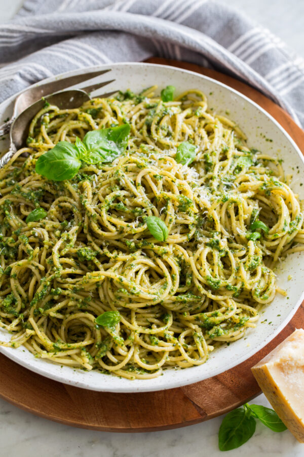

Pesto Pasta Recipe

description :
Pesto Pasta is a flavorful and easy to make dish made with pasta, pesto sauce, and grated parmesan cheese.
It is a greatdish for a quick weeknight meal or a casual lunch.
Ingredients :
- Pasta(shoot pasta preferrably)
- pesato sauce
- Grated parmesan cheese
- salt and pepper
Steps :
-
Cook spaghetti in salted water to al dente according to package directions. Before draining be sure to reserve the 1/2 cup pasta water.
-
Make pesto sauce: To a 7-cup food processor add basil leaves, parmesan, pine nuts and garlic. Cover with lid and pulse in short bursts until finely minced.
-
Scrape down food processor. Cover, then with food processor running pour olive oil in through the feed tube of the lid. Don’t over-process, just blend.
-
Season with salt to taste.
-
Drain pasta, reserving some pasta water: Drain pasta once al dente then add to a large serving bowl. Pour in 1/4 cup pasta water and toss. Let it cool 1 – 2 minutes.
-
Toss pasta and pesto: Add all of the pesto and toss. Thin with up to 1/4 cup more pasta water as desired and garnish with more parmesan and pine nuts if desired.